Turning a one-button Outlook add-in into something people came back to.
ULedger Verify for Email Sender lets you confirm who really sent an email, without leaving Outlook. Version 1 did one thing and did it well. The board liked it. Customers kept saying the same thing back to us: "it lacks reactivity." I redesigned the add-in around three requests they were actually making, and ULedger reported a 43% rise in engagement duration and 400% more emails sent through the app afterwards.
The redesigned add-in, sitting beside a draft in Outlook.
Executive summary
North Star
ULedger Verify shipped as a dashboard instead of a button. You open the add-in while you're signed in and it already shows your verified email history, your top contacts, and whether the person you're about to email is who they say they are. I designed it in 4 weeks against three customer requests, and I kept every screen inside what an Outlook add-in panel can actually hold.
My role
Product Designer. Design system, user flows, wireframing, low-fidelity, prototyping, and high-fidelity
Client
ULedger Inc.
Timeline
4 weeks, excluding development
Team
A senior engineer, a project manager, and the marketing head
Tools
Figma
At a glance
The short version.
43%
increase in user engagement duration after the update
400%
increase in the number of emails sent using the app
95%
satisfaction rating for fake email detection
4 wks
of design, from the first request to handoff. Development ran after that
4
customer quotes the team brought back. They set the whole scope
3
requests I grouped those quotes into, with one flow designed for each
The 43%, 400%, and 95% figures were reported by ULedger after the update shipped. I designed the work. I did not run the measurement.
The problem
Version 1 was one button. You opened an email, hit reply, and a Send Verified Email button appeared. It worked, and the board liked it. Customers kept saying it did not react to them. They could not see what they had already sent, they could not tell whether a contact was real, and the add-in forgot them the moment they closed an email.
What I did
I took the four quotes the team collected and grouped them into three requests. Then I mapped everything the app could actually show, since it already writes every verified email to the blockchain, and worked out how much of that fits an add-in panel. I designed the idle state, the activity states, and a verification flow, and I put variations in front of the team at each step.
The outcome
The add-in opens to a dashboard now. Recent activity, top contacts, verified counts, and a badge on anyone in the ULedger Network. ULedger reported 43% longer engagement, 400% more emails sent, and a 95% satisfaction rating on fake email detection.
Featured requests
It lacks reactivity
Four quotes came back from customers. None of them asked for a feature by name. Read together they describe the same gap. The add-in never told anyone anything. Every screen in this case study traces back to one of these four lines.
What they saidWhat it was actually asking for
"It lacks reactivity"
Show previous activity, previous emails, and the information around an email, instead of a single send button that says nothing back.
"I want to see my previous verified emails right away"
Verified email history has to be there on open, not buried behind a click into another platform.
"Can I see if my contacts on my teams/association are legit?"
Use the ULedger Network to confirm that a contact is who they say they are, for the people already on our products.
"I have been receiving fake emails with my associate names and mistyped emails, is there a way to fix it?"
Catch the case where the name matches but the address is off by a character, and stop the send before it happens.
Objective and solution
Three objectives, three things to build.
We wrote the objectives before I drew anything, and each one had a matching solution the whole team agreed on. That pairing is what kept a 4 week project from turning into a wishlist.
ObjectiveSolution
Add new flows that could enhance engagement and reactivity.
Create a dashboard to display recent emails, contacts, and helpful data.
Develop a feature that retrieves information from our server.
Use the app's own network to verify existing contacts.
Implement a new security feature to protect against email phishing.
Notify users when there is an attempt to communicate with a potentially fake profile.
Version 1
Version 1 did one thing, and it did it well.
It was direct and to the point, and the board members all liked it. They wanted more features though. Customers wanted something interactive. We set out to cover that before we put our own pipeline in.
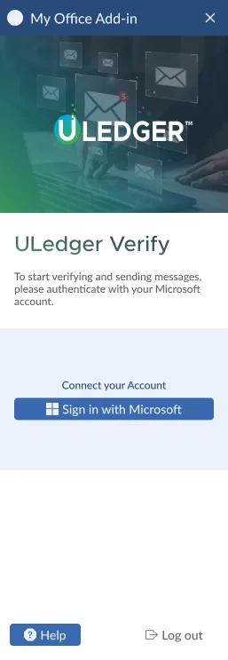
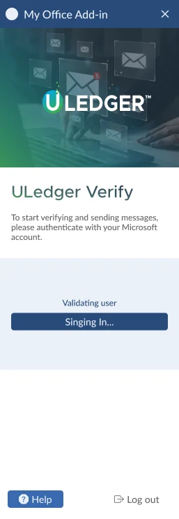
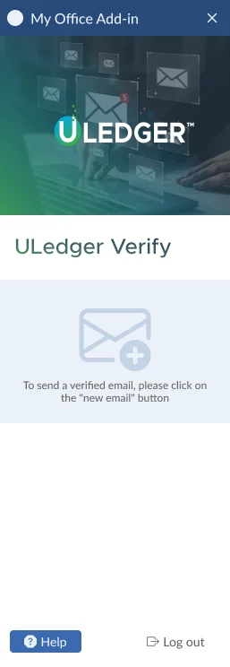
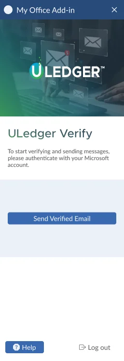
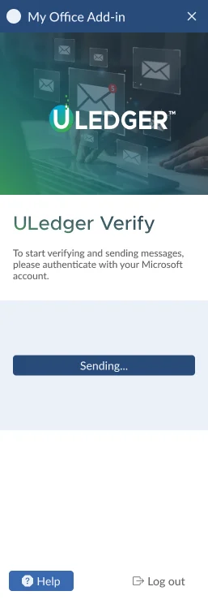
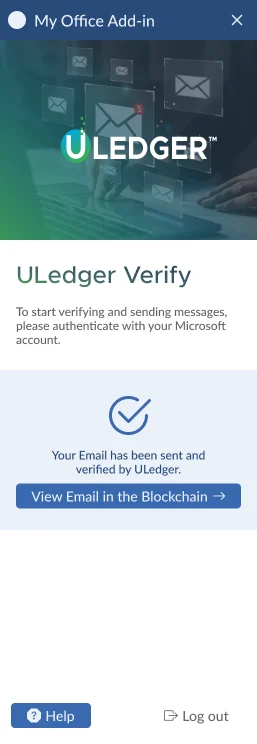
Research and planning
I started with a peg and with what we already had.
The nearest thing to us was HubSpot.
HubSpot's add-in is direct and to the point, with well organised information and an easy way in. Our target market looks like theirs, mid to high level users who know their way around SaaS. ULedger Verify has a narrower job though. It sends secured email. And because it is an add-in, we cannot put much on screen at once.
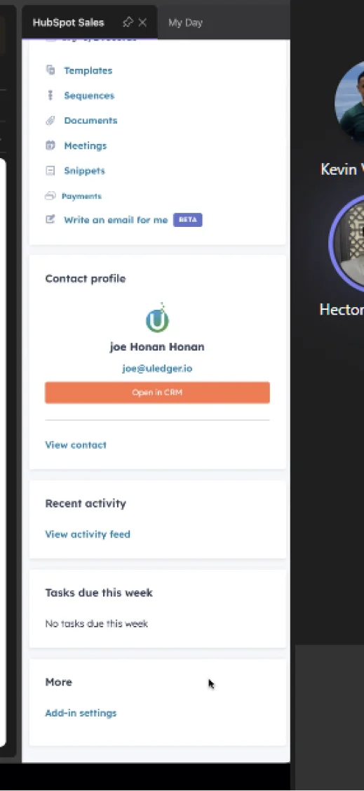
The moodboard, with everything grouped.
Here is the board I worked from. I like running variations, and our head engineer gave me the data we actually needed to show, which made this a lot easier. The first goal was laying the groups out in different formats: cards, carousel, or list.
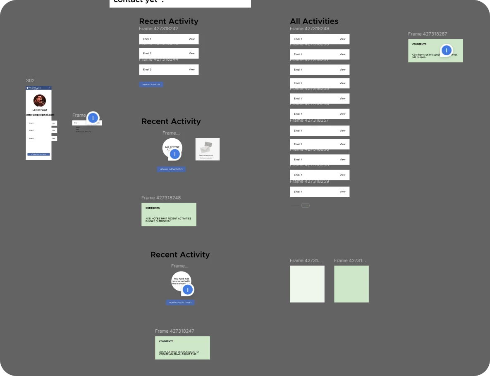
Recent activity, all activities, and the two no-activity states, laid out side by side with the team's comments attached.
Exploded view
Everything we could show, before deciding what we would.
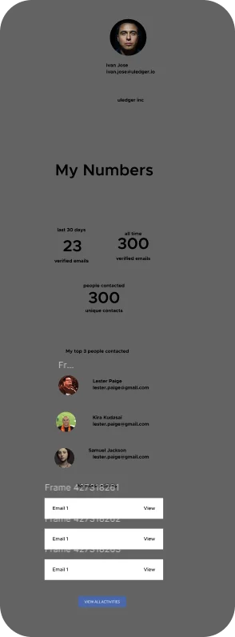
The data laid out as a panel, before any styling.
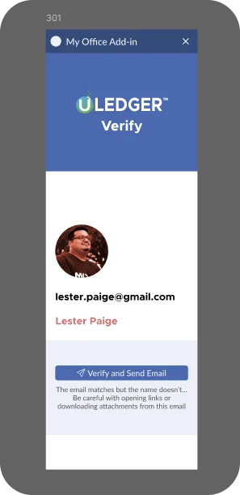
An early pass at the mismatch warning that became Request 2.
Numbers
Number of emails sent. Number of emails received.
Contacts
Name of the contact. Email address. Emails exchanged.
Association
The email list connected within the association.
ULedger blockchain
The app stores and encrypts every email and every piece of information on the blockchain, so we can read that back and show it. It is also what verifies contacts and emails.
Request 1
"It lacks reactivity."
Products are good when the goal is clear and everything is straightforward. Direct is not always what people want though. We could add more than features. We could give the add-in an information reaction, which means showing previous activities, previous emails, and the information around an email.
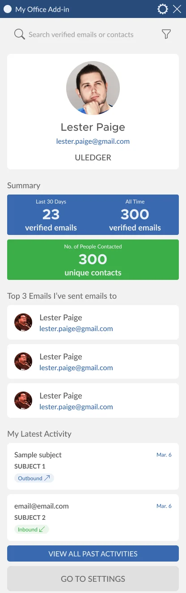
Version A. Full-bleed colour blocks for the summary, and a plain list for the top 3 contacts.
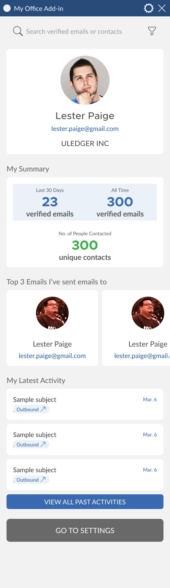
Version B. The summary sits inside a card, and the top 3 contacts run as a carousel.
These are the two idle states I made. I had already set and updated the branding colours before this, which is not shown here. I also like showing colour variations and different layouts for grouped information.
We went with the coloured layout for the summary, since it presents the most interesting data we can show right now. We do not have a hierarchy of colours yet, so I used our main blue and green for the two sets of data. For the Top 3 emails section I built a carousel. Most of the team preferred the simplicity of a list. We went with the carousel anyway, because it is more reactive and it gets people engaging. For the button colour we picked a light shade, since it is not as crucial.
Honest assessment
What went wrong, or did not.
What we dropped
We removed the helper that explains how the add-on works. Users still need to reply to or write an email in order to use it, and now nothing on screen says so. Personally I think we should have kept it.
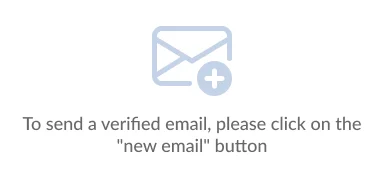
What we gained
In version 1, users had to click an existing email and reply before the send button would appear at all. In the new version they reach their dashboard without opening a new email, as long as they are signed in. The profiles are useful too. They give people a sense of ownership and personalisation that version 1 did not have. And the update uses far more of the add-on's screen real estate.
So here is the final version.
Reactivity
This is where customer reactivity comes in.
There are three scenarios. No general activity for the past three months at all. Recent activities recorded. And no activity with the person you are contacting or emailing. You can tell them apart from the icon and the microcopy. I used a paper airplane icon to stand for communication with the contact.
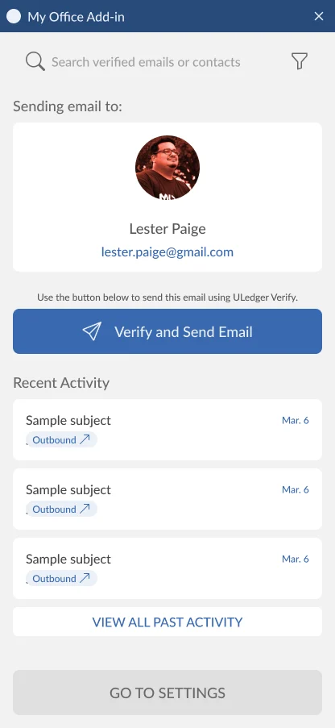
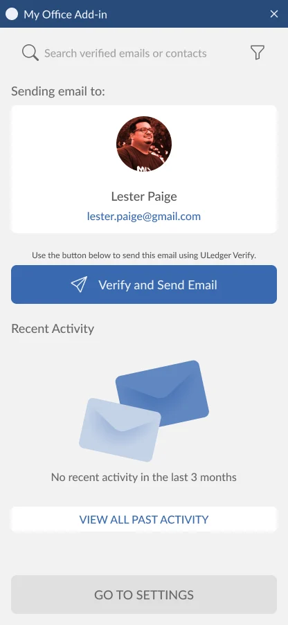
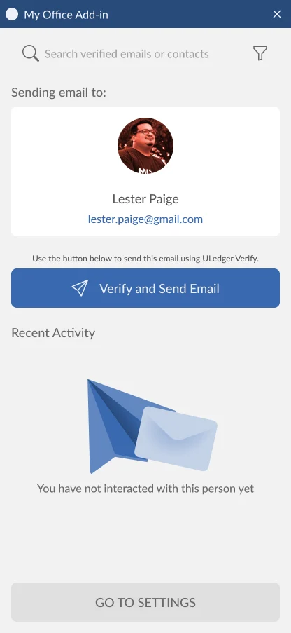
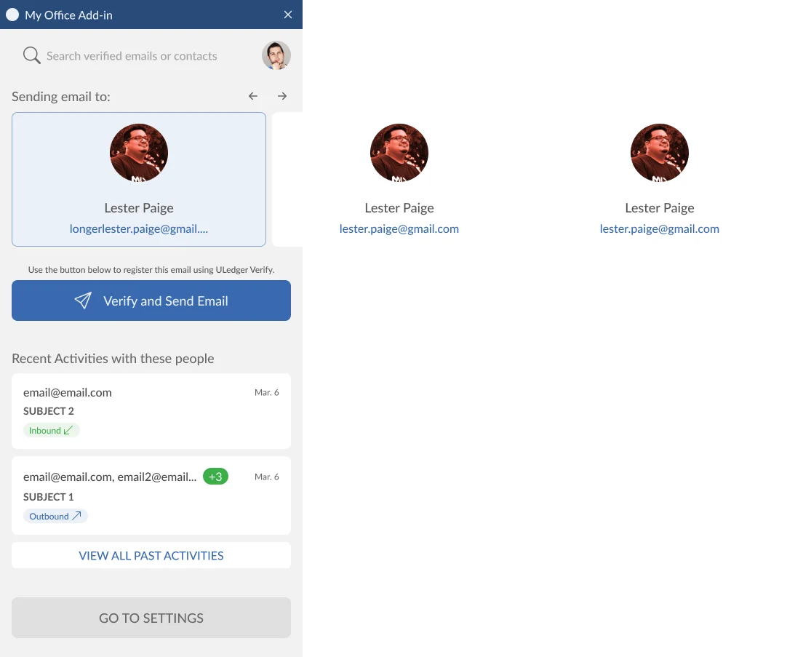
Reading the email itself
We cannot show emails inside the add-in. To see what was in a previous email, you click it and a tab opens in the Blockchain Explorer, which is a separate platform.
Microcopy as instruction
We added a small helper here for clarification, reading "Use the button below to send this email using ULedger Verify". I still think we need a helper for the previous state as well.
Email list distinction
Green for inbound, blue for outbound.
We decided to use green for inbound and blue for outbound communications. Each row also carries a worded tag and a direction arrow, so the difference never rests on colour alone. The same row has to work whether the message went to one person or to twelve.
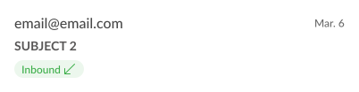
Inbound, one sender. Green tag, arrow pointing in.
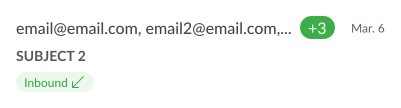
Inbound, several people. The extra addresses collapse behind a counter.
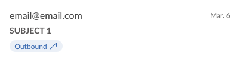
Outbound, one recipient. Blue tag, arrow pointing out.
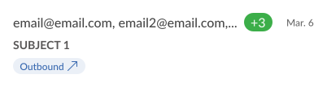
Outbound, several recipients. Same counter, same row height.
Rejected options
The variations I did not ship.
Here are the other variations I came up with. The difference is where the main call to action, the send button, sits. I really wanted to test these options. The button placement feels too far from the main profile of the contacts, so I let them go on judgment rather than on evidence.
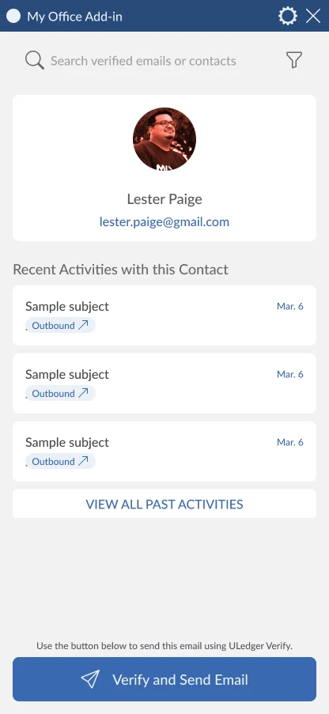
Send button pinned to the bottom, under the whole activity list.
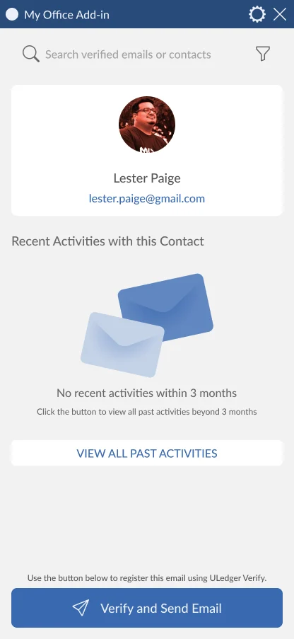
Send button after the activity block, still below the fold.
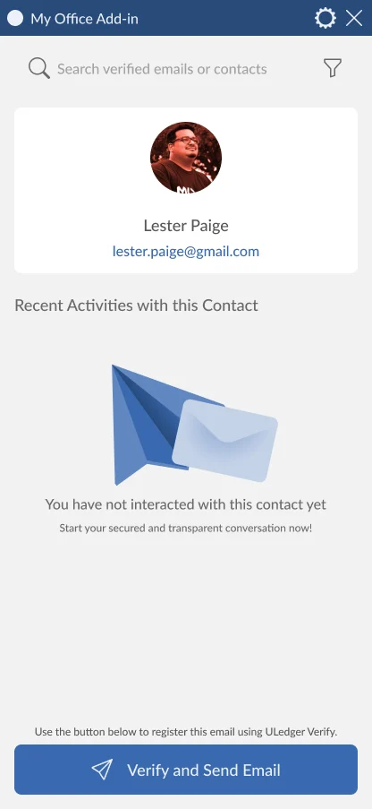
A third order for the profile, the activity, and the button.
Request 2
"Can I see if my contacts on my teams or association are legit?"
Paired with the fourth quote: "I have been receiving fake emails with my associate names and mistyped emails, is there a way to fix it?" The inspiration here comes from using the ULedger Network, specifically for contacts who are also on our products, on top of Outlook's own anti-spam features.
The approach is straightforward. We add a badge for verified contacts. If someone has the same name but a mistyped email address, which is increasingly common when you are targeting a large firm, we display a red notice. Users have to click the checkbox before they can click the send button.
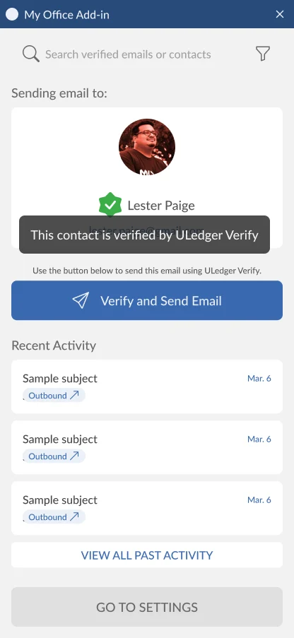
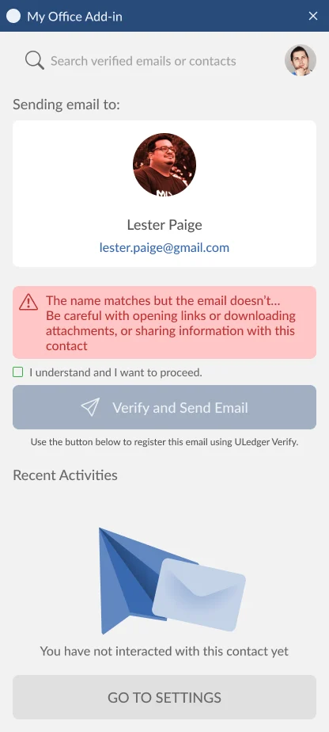
Request 3
"I want to see my previous verified emails right away."
In different situations, users can now see all of their previous activities and their email conversation with a specific contact. This is the request that turned the add-in from a send button into somewhere you go back to.
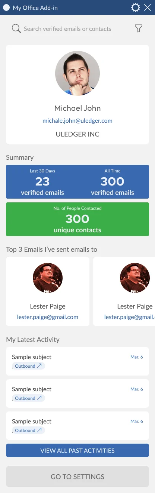
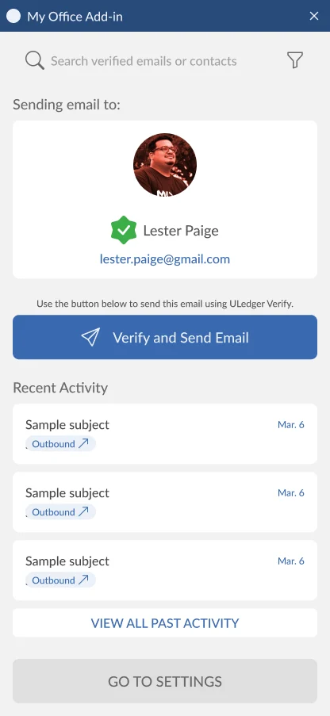
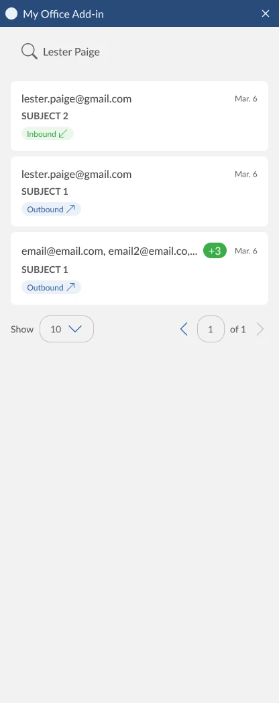
Outcome
The add-in stopped being a button and started being somewhere you go.
Three requests, one panel, 4 weeks of design. Here is what came out of it.
01 / Engagement · reported by the client
43% increase in engagement duration
Version 1 gave people one button and no reason to stay. The dashboard hands them their verified counts, their top contacts, and their recent activity the moment the panel opens. ULedger reported a 43% increase in user engagement duration after the update.
02 / Usage · reported by the client
400% more emails sent through the app
Getting to the dashboard no longer required opening or replying to an email first. You just have to be signed in. ULedger reported a 400% increase in the number of emails sent using the app.
03 / Trust · reported by the client
95% satisfaction on fake email detection
The verified badge, the red notice on a mistyped address, and the checkbox you have to tick before the send button turns on. ULedger reported a 95% satisfaction rating for fake email detection.
These three figures come from ULedger. I designed the work and did not run the measurement.
04 / Scope · shipped
Three requests inside one add-in panel
Reactivity, contact verification, and email history all landed in a panel that cannot show much at once. I designed the flows, the states, and the design system behind them in 4 weeks, then handed off to development.
Reflection and what's next
The helper I would put back, and the tests I never got to run.
Two things stayed unfinished, and neither is a mystery to me. I know exactly what I would do with them if the project came back.
Put the helper back.
We dropped the line that explained how the add-on works. People still have to write or reply to an email before they can send a verified one, and nothing on screen says so any more. I would bring it back for the idle state, not just the sending state.
Test the CTA placements.
I drew several versions of where the send button should sit and picked one on judgment. The rejected placements put the button too far from the contact's profile, which is why I let them go. I still want that decision tested rather than argued.
Give the colours a hierarchy.
I used our main blue and green for two sets of data because we did not have a colour hierarchy yet. That is a shortcut and I knew it at the time. The next version of the system should say what blue and green mean before a screen uses them.
Next case study
Redesigning a map workflow into an audience builder
A two-year-old geographic targeting tool, rebuilt around how four kinds of user actually think about building an audience.